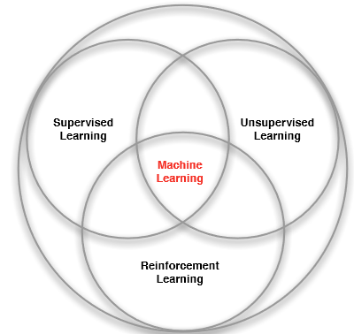
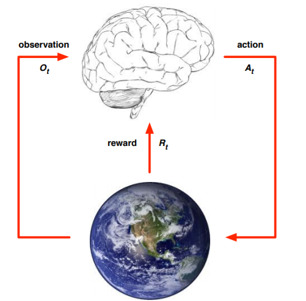
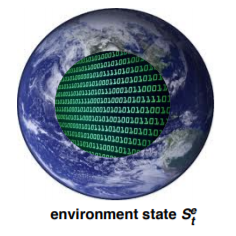
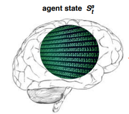
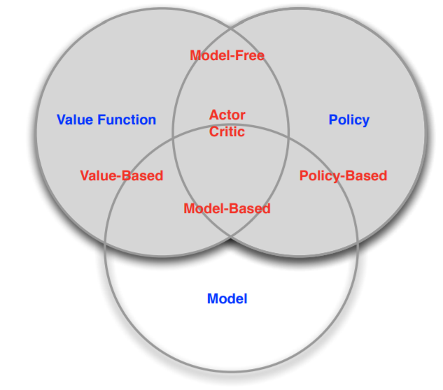
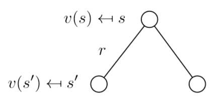
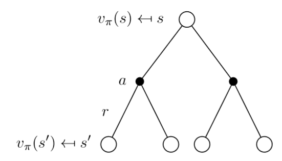

reinforcement learning(1)
reinforcment learning intro and MDP
In the article, I mainly cite various material from foreign courses or on the wiki, and I will bring my own understanding. If you read my blog and want to communicate with me or find any problems, please send me email zhanggengzhi@outlook.com.:)
reinforcemnet learning introduction
Before introducing reinforcement learning, I show this picture first.

From this picture, we can know the reinforcement learning is a banch of machine learning. So what are the differeces, I will give the answer at the end of this article.
Now, let me introduce the reiforcement learning. Reinforcement learning (RL) is an area of machine learning inspired by behaviourist psychology, concerned with how software agents ought to take actions in an environment so as to maximize some notion of cumulative reward.

In this picture, at each step
- excute action
- receives observation
- receives scalar reward
The environment: - receive action
- emit observation
- emit scalar reward
increments at env. step
So the history sequence of observations, actions, rewards can be represented:
State, which is the information used to determine what happens next, can be represented:
The environment state is the environment’s private representation, which the environment uses to pick the next observation/reward. The environment state is usually unvisible to the agent

The agent state is the agent’s internal representation, which the agent uses to pick the next action, and it can be used by reinforcement learning algorithms.

The environment can be divided into fully observable environment and partically observable environment. So what differences? In the fully observable environment, , means that the agent directly observes environment state, while in the partically observable environment, agent indirectly observes environment and
is not equal to
. As for a more in-depth understanding and application, I will talk in later chapters.
Then, I talk about the components of an RL agent. An RL agent may include one or more of these components:
- policy: policy is the agen’s behavior, it’s a map from action to m,state, and it’s always represented by
. By deterministic policy,
. By stochastic policy,
.
- value function: value function is a prediction of future reward, it’s used to evaluate the goodness/badness of states and therefore to select between actions.
model:A model predicts what the environment will do next, P predicts the next state, R predicts the next (immediate) reward.
These can be sum up as a picture:

At last, I talk about RL agent categorization. According to the value function, the agent can be divided into three categories, value based, policy based, actor-critic. As shown in the table:| value based | No Policy (Implicit), Value Function |
| policy based | Policy, No Value Function |
| actor-critic | Policy, Value Function |
According to the value function, the agent can be divided into two categories, model free and model based.
| model free | Policy and/or Value Function, No Model |
| policy based | Policy and/or Value Function Model |
I will discuss these in detail in later chapters.
Here, the basics of reinforcement learning have been introduced. Do you still remenber the question mentioned at beginning? yes, the differences between RL and other machine learning. We can conclude the following:
- There is no supervisor, only a reward signal
- Feedback is delayed, not instantaneous
- Time really matters (sequential, non i.i.d data)
- Agent’s actions affect the subsequent data it receives
Markov Decsion Process(MDP)
The learning process of reinforement learning is a dynamic and continuous process of interaction, and the data needed is also generated through constant interaction with the environment. Reinforcement learning is more like a human learning process. Human beings learn to walk, run, and work by interacting with their surroundings. The interaction between mankind and nature create modern civilization. In addition, deep learning such as image recognition and speech recognition deal with the problems of perception, and reinforcement learning focus on decision making. The ultimate goal of artificial intelligence is to make intelligent decisions through perception. Therefore, the deep reinforcement learning algorithm that combines the deep learning technique developed in recent years and the reinforcement learning algorithm is a promising method for human to achieve the ultimate goal of artificial intelligence. With decades of development, the researchers proposed a set of frameworks that can solve most of the reinforcement learning problems. This framework is Markov decision process, referred to as MDP.
Markov decision processes (MDPs) provide a mathematical framework for modeling decision making in situations where outcomes are partly random and partly under the control of a decision maker. MDPs are useful for studying a wide range of optimization problems solved via dynamic programming and reinforcement learning. More precisely, a Markov decision process is a discrete time stochastic control process. At each time step, the process is in some state , and the decision maker may choose any action
that is available in state
. The process responds at the next time step by randomly moving into a new state
, and giving the decision maker a corresponding reward
.
To understand MDPs, We should know what is Markov property first. The Markov property refers to the next state of the system is only related to the current state, and has nothing to do with the previous state. Mathematically, if is a stochastic process, Markov property refers to:
Next, we learn Markov process. In probability theory and related fields, a Markov process is a stochastic process that satisfies the Markov property (sometimes characterized as “memorylessness”).
A Markov chain is a type of Markov process that has either discrete state space or discrete index set (often representing time), but the precise definition of a Markov chain varies. For example, it is common to define a Markov chain as a Markov process in either discrete or continuous time with a countable state space (thus regardless of the nature of time),but it is also common to define a Markov chain as having discrete time in either countable or continuous state space (thus regardless of the state space).
Markov chain is a sequence of random variables … with the Markov property, namely that the probability of moving to the next state depends only on the present state and not on the previous states:
Then, the third conception is Markov Decision Process. The above state sequence is called Markov chain. Given a state transition probability, there are multiple Markov chains starting from one state. For games or robots, the Markov process is not enough to describe its characteristics, because both the game and the robot interact with the environment through action and get rewards from the environment, while there are no actions and rewards in the Markov process. The Markov process that takes actions (strategies) and returns rewards is called the Markov decision process.
A Markov decision process is a 5-tuple , where:
is a finite set of states
is a finite set of actions
is the probability that action a in state s at time t will lead to state s’ at time t+1. State transition matrix defines transition probabilities from all states s to all successor states s’.
where each row of the matrix sums to 1
is the immediate reward (or expected immediate reward) received after transitioning from state s to state s’, due to action a
is the discount factor, which represents the difference in importance between future rewards and present rewards
The core problem of MDPs is to find a “policy” for the decision maker: a function that specifies the action
that the decision maker will choose when in state s. The goal is to choose a policy
that will maximize some cumulative function of the random rewards, typically the expected discounted sum over a potentially infinite horizon:
(where we choose
)
where is the discount factor and satisfies
. Why we need a discount number? There are some reasons.
- Mathematically convenient to discount rewards
- Avoids infinite returns in cyclic Markov processes
- Uncertainty about the future may not be fully represented
- If the reward is financial, immediate rewards may earn more interest than delayed rewards
- Animal/human behaviour shows preference for immediate reward
Now, we can write value function, which gives the long-term value of state s:
According to deduction:
The value function can be decomposed into two parts: immediate reward ; discounted value of successor state
. Expressed using matrices:

As the picture shows, the value function can also be writen as ,
In the same way, we can get state-action function , what’s the relationship between value function and value-action function? This picture can give us answer:

Apparently, we can get these function: